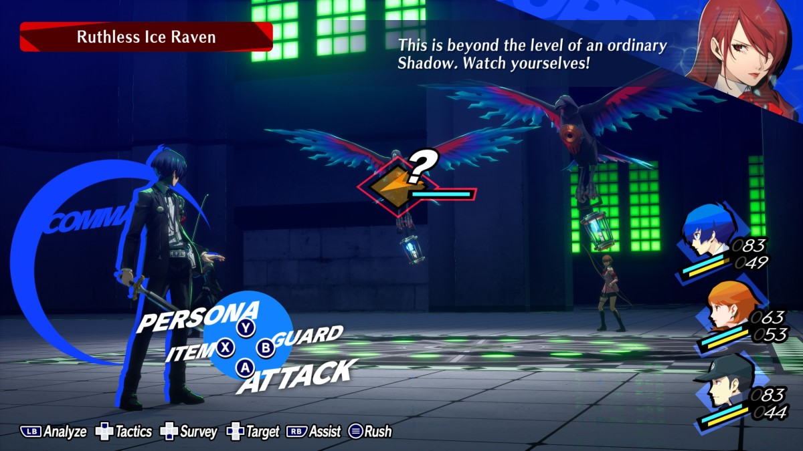
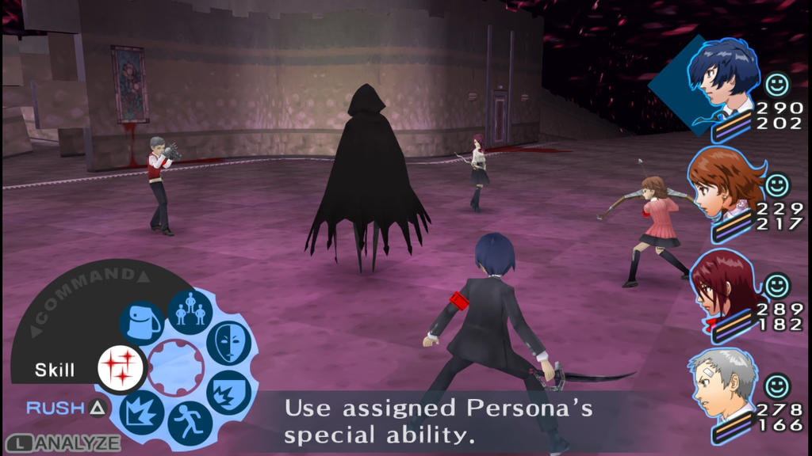

PÁGINA DE MAKOTO YUKI
- Este es el inicio de esta página web que recolectare toda la información de Persona 3 Reload con el objetivo de estudiar codigo HTML.
Makoto Yuki
Protagonista de Persona 3 es un estudiante transferido en la escuela Gekkoukan en Iwatodai City. Es huérfano, sus padres murieron en el Moonlight Bridge en su auto durante un fatal accidente una década antes del juego.
Makoto Yuki tiene el cabello azul oscuro, ojos azules y es un poco bajo que el promedio. Su fleco esconde su ojo derecho. Se muestra la mayoría del tiempo con sus manos en sus bolsillos (excepto cuando sostiene sus armas), inclinándose ligeramente. Frecuentemente se le ve escuchando música con sus audífonos.
Hoy, dia 13 de octubre, iniciamos esta aventura, que nos llevara a disfrutar de la espera hasta que llegue el momentum del juicio final. El dia 02 de Febrero de 2023, saldra a la luz el remake del juego original de "Shin megami tensei Persona 3" originalmente desarrollado para PlayStation 2, por la desarrolladora de videojuegos "Atlus".
Esta obra de arte denominado "Persona 3" es un videojuego JRPG que trata sobre la historia de nuestro protagonista que recientemente se mudo a una residencia de estudiantes para empezar una nueva etapa en su vida estudiantil y personal. Nuestro personaje que originalmente es llamado Makoto Yuki. Pero nosotros lo viviremos con una experiencia más personal al darnos la posibilidad de plasmar nuestro nombre en la historia.
Cambios respecto al Persona 3 original
Se ha revisado la estética del juego, incluyendo los diseños y sprites de los personajes, la interfaz gráfica de usuario, los modelos de los mapas y su contenido. Se ha añadido un minimapa, una barra de objetivos debajo de la fecha y la fase lunar, y NPC que llenan los pasillos del instituto Gekkoukan. El juego incluye nuevos arreglos musicales y composiciones originales, con Atsushi Kitajoh como compositor principal.
IR A PÁGINA 2DIFERENCIAS GRÁFICAS
